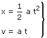
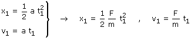
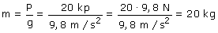
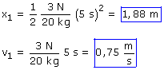

La fuerza aplicada al cuerpo produce una aceleración (a = F/m). Como el cuerpo está en reposo comenzará a moverse en la dirección y sentido de la fuerza
Ecuaciones del movimiento:
|
|
 |
Parámetros: a = F/m |
Aplicación:
Datos: t1 = 5 s, Incógnitas: x1 , v1
|
|
 |

El dato que tenemos es el peso del cuerpo (20 kp), vamos calcular la masa:

(Recuerda: En la Tierra, el valor numérico del peso de un cuerpo en kp coincide con el valor numérico de su masa en kg)
Sustituyendo los datos:
